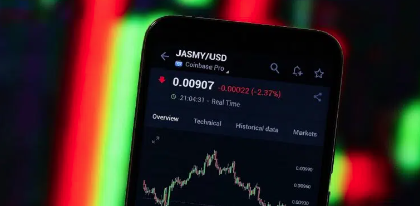

Novedades del Mundo Cripto
Mantente al día con las últimas noticias sobre blockchain, Web3 y más
Cayó USDT en Argentina tras el levantamiento del cepo
Las stablecoins son una forma de dolarizarse sin comprar dólares en el mercado de cambio oficial.
La explosión de bitcoin y las criptomonedas será masiva
A pesar de las actuales correcciones, diversos datos del mercado muestran que la industria de criptomonedas crece a paso acelerado.

El autoproclamado «bitcoin japonés» vuelve a destacarse por su subida semanal
JasmyCoin es un token de Ethereum que se enfoca en el internet de las cosas.